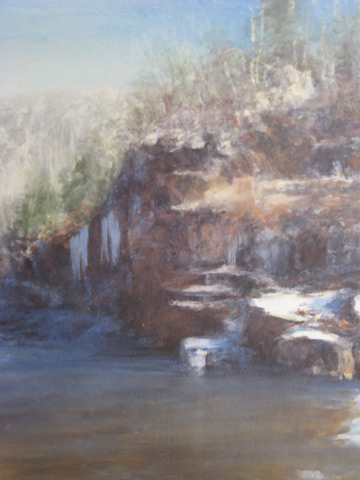
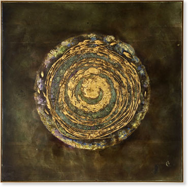

|
> Previous Exhibitions > 2008 > Les Yeux du Monde's Grand Re-opening
Les Yeux du Monde's Grand Re-opening

Grand re-opening | Artists on exhibit | Fall season
Dean Dass

Dean Dass. Upper Moormans, 2007.
Oil on linen, 20 x 16 inches.
See more works by Dean Dass >
Back to top >
Ellen Hathaway
Ellen Hathaway.
Back to top >
Peyton Hurt
Peyton Hurt. Siren, 2007.
Oil on panel, 16 x 16 inches.
See more works by Peyton Hurt >
Back to top >
John McCarthy
John McCarthy. Sun Setting Behind Dead Cedar Copse.
Oil on board (cradle frame), 8 x 8 inches.
See more works by John McCarthy >
Back to top >
Russ Warren
Russ Warren. Fantasia del Paso, 2008.
Oil on board, 20 x 16 inches.
See more works by Russ Warren >
Back to top >
Fall season, a powerful line up
The fall schedule begins in September with John Borden Evans, followed by Shelby Fischer, Annie Harris Massie and Clay Witt.
John Borden Evans. Just Four Chickens Diptych, 2005.
Acrylic on canvas, 65 x 97 inches

Clay Witt. Welter and Waste, 2004 – 2005.
Pigment, polymer emulsion, malachite gesso, gold leaf, and rust on panel,
47 x 47 inches
Back to top >
|